第 21 讲：动态全局光照与 Lumen
从渲染方程与蒙特卡洛采样出发，讲清 RSM、LPV、VXGI、SSGI 到 Lumen 的实时全局光照技术演进与工程实现。
◆ 学完这一讲，你应该能
能用自己的话解释全局光照（GI）为什么是实时渲染的难点，以及直接光与间接光的区别。
能写出渲染方程，并说明蒙特卡洛积分与重要性采样的基本思想。
能对比 RSM、LPV、VXGI、SSGI 四类 GI 方案的原理、优缺点与适用场景。
能说明 Lumen 的三大阶段：快速光线追踪（SDF）、辐射度注入与缓存（Surface Cache / World Probe）、全像素着色（Screen Probe + SH）。
能在 UE5 中定位 Lumen 相关设置，并解释常见 GI 瑕疵（漏光、噪点、闪烁）的成因与排查方向。
核心结论速记
全局光照的本质是求解渲染方程，它把直接光照和无数次弹射的间接光照统一在一个积分里。
实时渲染无法精确求解渲染方程，只能用蒙特卡洛积分做近似，采样数越少噪点越多。
重要性采样让采样分布匹配被积函数（如余弦项、GGX 项），在相同采样数下显著降噪。
RSM 把阴影贴图上的每个像素当作虚拟光源，LPV 用 3D 网格传播辐射度，VXGI 用体素化场景 + 锥体追踪，SSGI 复用屏幕空间数据做光线步进。
SSGI 快但只能处理屏幕内可见的间接光，屏幕外信息缺失导致漏光/缺失；VXGI 能处理屏幕外但体素化有遮挡不准确和内存开销。
Lumen 用 Mesh SDF 做快速光线求交，用 Surface Cache 缓存表面光照，用 Screen Probe + World Probe 做辐射度缓存，最后用球谐（SH）插值到全像素。
Lumen 的核心取舍是：用低分辨率、低采样数的光线追踪 + 时域/空间降噪，换取实时性能。
011. 为什么全局光照是实时渲染的硬骨头
先给直觉：现实世界里，你看到的一面白墙，除了被灯直接照亮的部分，还会被周围物体反射过来的光“二次照亮”。这种光在场景里来回弹射、最终照亮阴影和背光面的现象，就是全局光照（Global Illumination, GI）。没有 GI，画面会显得“死黑”、物体像贴纸；有了 GI，颜色会互相渗透（color bleeding），阴影里也有细节。
课件从渲染方程（The Rendering Equation）讲起，这是 Kajiya 在 1986 年提出的能量平衡方程。它的物理含义是：一个表面点向某个方向发出的光，等于它自身发出的光，加上它接收到的所有方向的光乘以 BRDF 再乘以余弦项后的积分。用文字描述就是：
\[ L_o(x, \omega_o) = L_e(x, \omega_o) + \int_{\Omega} f_r(x, \omega_i, \omega_o) L_i(x, \omega_i) (n \cdot \omega_i) \, d\omega_i \]
其中 \(L_o\) 是出射辐射度，\(L_e\) 是自发光，\(f_r\) 是 BRDF，\(L_i\) 是入射辐射度，\(n \cdot \omega_i\) 是余弦项。难点在于 \(L_i\) 本身又来自其他表面的 \(L_o\)，这是一个递归积分方程，理论上要无限次弹射才能精确求解。
课件强调“Global Illumination: Billions of Light Source”——场景里每个表面点都可以看作一个光源，所以 GI 等价于对无数个面光源做积分。实时渲染每秒要算几十帧，不可能精确求解，于是整个第 21 讲都在讲如何用近似方法在实时预算内逼近这个积分。
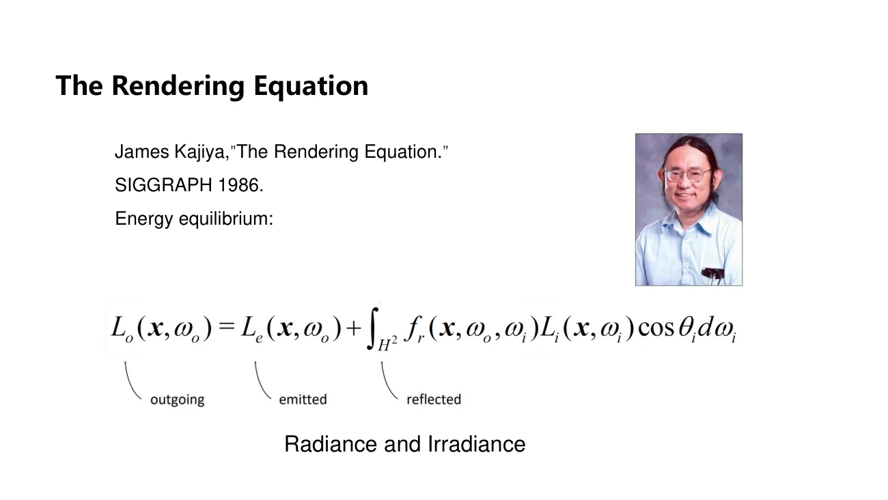
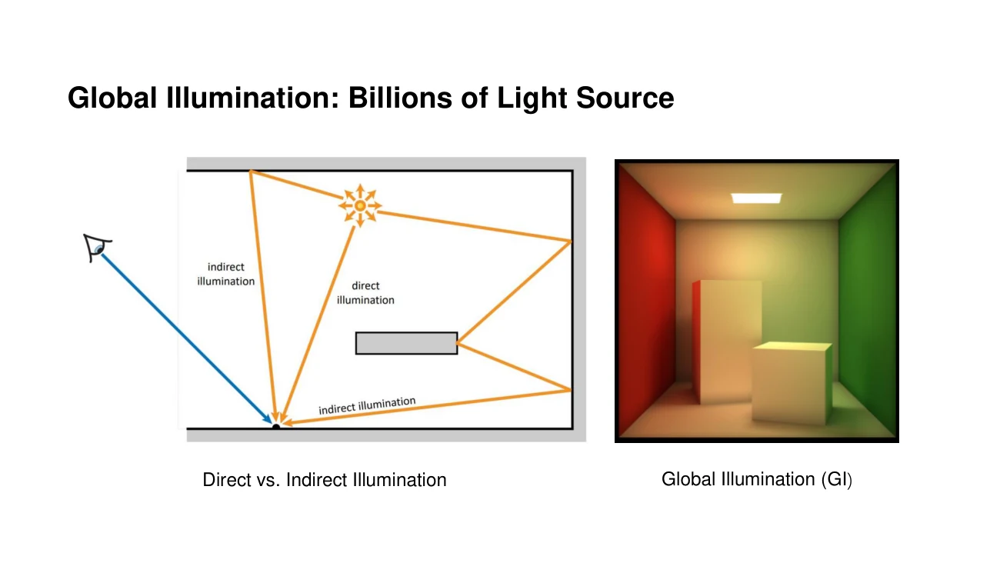
补充说明
渲染方程的积分域是半球 \(\Omega\)，实际实现中常用余弦加权采样来吸收 \(n \cdot \omega_i\) 项。
常见坑
把 GI 等同于“环境光遮蔽（AO）”：AO 只是经验性的暗化，不是能量守恒的间接光，不能产生 color bleeding。
认为渲染方程只能算一次弹射：只算一次弹射（直接光 + 一次间接）在暗部仍会偏暗，多次弹射才能量收敛。
UE / Unity 落地
UE5 中 Lumen 默认开启，Project Settings → Rendering → Global Illumination 可选择 Lumen 或 None；Lumen 同时处理漫反射和镜面反射的间接光。
Unity 中对应的是 Enlighten（实时 GI）或烘焙 Lightmap；URP/HDRP 的 SSGI 是屏幕空间近似。
022. 蒙特卡洛积分与重要性采样：用随机换速度
渲染方程是一个高维积分，解析解不存在。课件给出的第一把钥匙是蒙特卡洛积分（Monte Carlo Integration）：用随机采样的平均值近似积分。直觉是“撒点求平均”——在积分域里随机撒 \(N\) 个样本，算被积函数值除以概率密度，再取平均。公式为：
\[ \int f(x) \, dx \approx \frac{1}{N} \sum_{i=1}^{N} \frac{f(x_i)}{p(x_i)} \]
其中 \(p(x)\) 是采样用的概率密度函数（Probability Density Function, PDF）。课件强调“Sampling is the Key”：样本数越多噪点越少，但实时预算只允许每像素几条光线，所以必须让采样更“聪明”。
这就引出重要性采样（Importance Sampling）：让 PDF 的形状尽量接近被积函数 \(f\)，这样 \(f/p\) 的方差小，同样的样本数下噪点更少。课件展示了均匀采样与重要性采样的对比：256spp 均匀采样仍有明显噪点，而按余弦或 GGX 分布采样后噪点大幅下降。对漫反射，最佳 PDF 正比于余弦项；对高光，最佳 PDF 正比于 GGX 分布。
课件还提到概率分布函数（CDF）用于把均匀随机数映射到目标分布，这是实现重要性采样的工程手段。最后给出结论：实时 GI 的采样数极少（Lumen 甚至只有 1/8 到 1/2 条光线每像素），所以重要性采样 + 降噪是必选项。
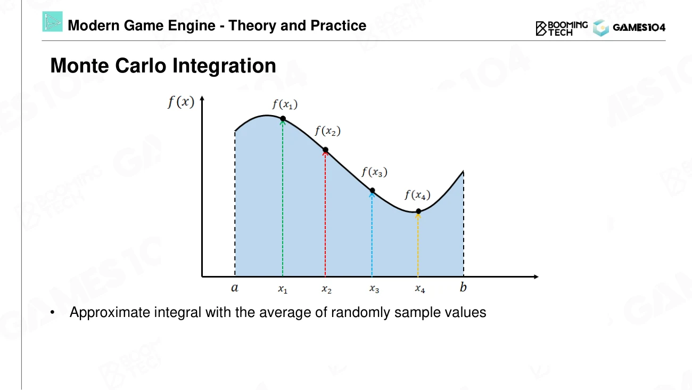
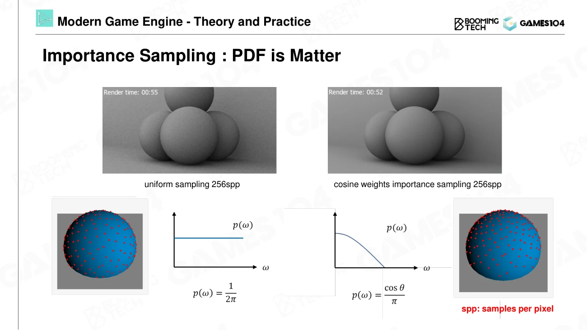
补充说明
课件中“Best PDF for Rendering”指 PDF 正比于 \(f_r \cdot L_i \cdot \cos\)，实际常拆成余弦项和 BRDF 项分别采样。
常见坑
忘记除以 PDF：只对 \(f(x_i)\) 取平均会得到有偏结果，亮度随采样分布变化。
PDF 与被积函数不匹配：用均匀 PDF 去采高光项，方差极大，表现为高光噪点闪烁。
样本数不足时直接出图：实时 GI 必须配合时域降噪（TAA/降噪器），否则噪点无法接受。
UE / Unity 落地
UE5 Lumen 的 Screen Probe 使用重要性采样 + 时域累积；Unity HDRP 的 SSGI 也提供采样数与降噪开关。
材质里的 Roughness 会影响 GGX 分布宽度，从而影响重要性采样的光线方向集中程度。
余弦加权重要性采样的核心思想（伪代码）（hlsl）
float3 CosineSampleHemisphere(float2 u) {
float r = sqrt(u.x);
float theta = 2.0 * PI * u.y;
float3 dir = float3(r * cos(theta), r * sin(theta), sqrt(max(0.0, 1.0 - u.x)));
return dir; // 局部空间，z 为法线方向
}
// 估计: sum(Le * BRDF * cos) / pdf，其中 pdf = cos/PI033. 屏幕空间之前的 GI：RSM 与 LPV
在硬件光追普及前，工业界用“注入虚拟光源”的思路做 GI。反射阴影贴图（Reflective Shadow Maps, RSM） 是 2005 年的经典方案：它把阴影贴图上的每个像素当作一个间接光源（虚拟点光源），记录该像素的世界坐标、法线和辐射度。着色时，对每个表面点收集附近若干 RSM 像素的贡献，近似一次弹射的间接光。课件指出 RSM 的优点是实现简单，曾被《战争机器》《神秘海域》《最后生还者》等 3A 项目使用；缺点是虚拟光源数量巨大，需要降采样和聚类，且只能处理一次弹射，间接光方向性也较粗糙。
光传播体积（Light Propagation Volumes, LPV） 由 CryEngine 在 SIGGRAPH 2009 提出。核心思想是用一个 3D 网格（voxel grid）传播辐射度：先把场景中的直接光照注入到网格里（Light Injection），然后沿 6 个轴向反复传播（Propagation），让光“扩散”到整个体积，最后在着色时从网格里采样间接光。课件用“光以有限速度传播”的比喻解释迭代传播过程。LPV 的优点是速度快、能处理动态光源和动态场景；缺点是网格分辨率有限导致漏光（light leaking），且传播是各向同性的，方向性不准确。
这两类方法共同奠定了实时 GI 的基本套路：把光注入某种中间表示（点集/网格），再在着色时查询。后续的 VXGI 和 Lumen 都延续了这个思路，只是中间表示和查询方式更精细。
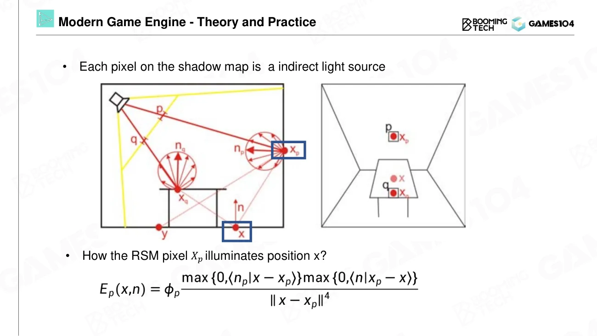
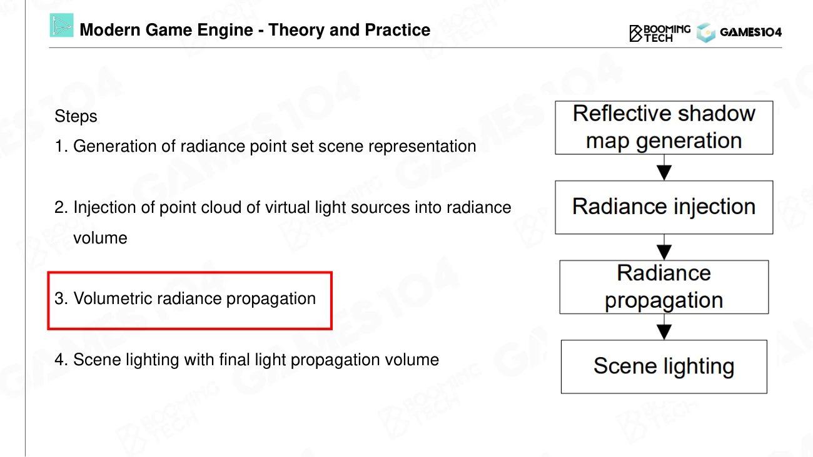
补充说明
课件提到 RSM 的“Photon Injection”思想，即把直接光结果当作光子注入间接光缓存。
常见坑
RSM 虚拟光源过多导致性能爆炸：需要对 RSM 降采样或做聚类，不能逐像素全量收集。
LPV 网格分辨率过低：表现为大面积漏光，墙后的光“穿墙”照亮暗部；提高分辨率或加遮挡测试可缓解。
把 RSM/LPV 当作精确 GI：它们都只近似低阶弹射，镜面反射和高频细节无法表达。
UE / Unity 落地
RSM/LPV 在现代引擎中已较少直接使用，但思想对应 UE 的 Distance Field Shadow 和旧版 Light Propagation Volume（UE4 曾内置 LPV）。
Unity 的 Enlighten 实时 GI 采用类似“注入 + 传播”的辐照度缓存思路。
044. 体素化 GI：SVOGI 与 VXGI
稀疏体素八叉树 GI（Sparse Voxel Octree GI, SVOGI） 和 体素全局光照（Voxel Global Illumination, VXGI） 把场景体素化，用体素存储辐射度和不透明度，再用锥体追踪（Cone Tracing） 查询间接光。课件详细讲了 VXGI 的流程：
- 体素化（Voxelization）：把三角形光栅化到 3D 网格，记录不透明度和方向覆盖。
- 光照注入（Light Injection）：对包含表面的体素计算直接光照，写入辐射度。
- 过滤（Filtering）：对体素做低通滤波，生成多级 mipmap，用于锥体追踪时按锥体 footprint 采样。
- 锥体追踪着色：从相机出发，按 BRDF 生成若干锥体，沿锥体累积体素辐射度和不透明度。
VXGI 的优点是能处理屏幕外信息、支持动态场景和多次弹射；缺点是体素化有遮挡不准确（薄物体漏光）、内存开销大（clipmap 多分辨率），且体素分辨率有限导致细节丢失。课件专门讨论了“Incorrect Occlusion”问题：朴素地累积不透明度会让薄墙后的光泄漏。
工程上 VXGI 用 clipmap 围绕相机组织多分辨率体素，并用环形寻址（toroidal addressing）更新体素——固定空间位置对应固定体素，相机移动时只更新新进入的区域。这是实时 GI 缓存的通用技巧。
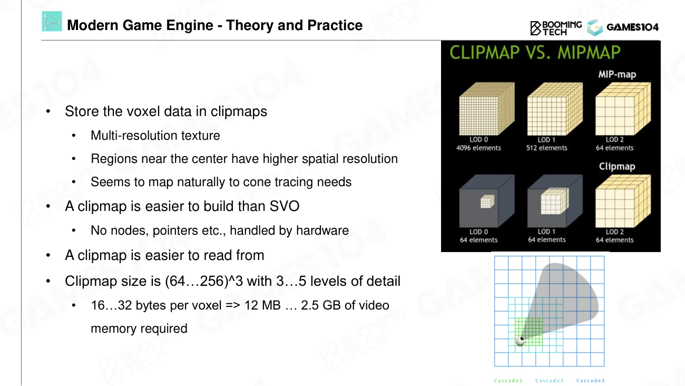
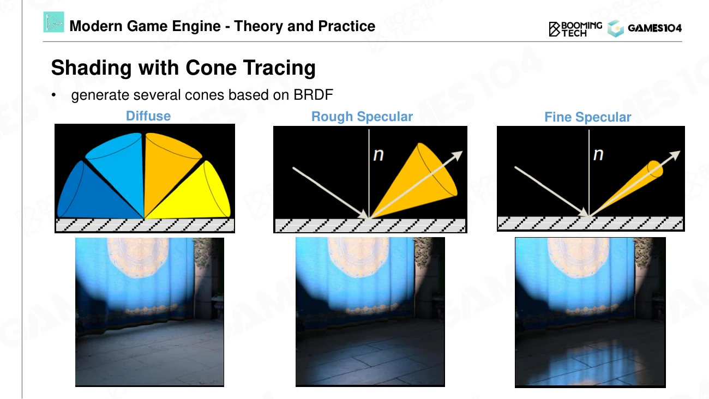
补充说明
SVOGI 与 VXGI 的核心区别在于中间表示：八叉树稀疏存储 vs clipmap 多分辨率网格。
常见坑
薄物体体素化丢失：墙太薄小于一个体素，导致光直接穿过；用半体素扩展或方向覆盖可缓解。
clipmap 更新不及时：相机快速移动时新区域体素未注入光照，出现闪烁或暗块。
锥体过大导致过度模糊：锥体 footprint 与 mip 不匹配，间接光失去方向性，画面发糊。
UE / Unity 落地
UE5 的 Lumen 早期版本曾用 VXGI 思路，现改为 Mesh SDF + Surface Cache；但 Distance Field AO 仍基于 SDF。
Unity HDRP 没有内置 VXGI，但可通过插件或自定义 Pass 实现体素 GI。
055. 屏幕空间 GI：SSGI 的快与局限
屏幕空间全局光照（Screen Space Global Illumination, SSGI） 复用当前帧的屏幕空间数据（颜色、深度、法线）做光线步进，近似间接光。直觉是：既然屏幕上的像素已经包含了场景可见部分的光照，那就可以在屏幕空间里“发射光线”去采样这些像素的颜色，当作间接光。
课件讲了 SSGI 的几个关键步骤：
- 屏幕空间辐射度采样：对每个片元，沿反射方向或余弦半球方向步进，命中屏幕上的像素就取其颜色作为间接光。
- 线性光线步进（Linear Raymarching）：固定步长前进，简单但步数多、易错过薄物体。
- 层级追踪（Hierarchical Tracing）：生成最小深度金字塔（min-depth mipmap），用层级结构加速步进，类似 2D 的 DDA。
- 邻居光线复用：存储命中点数据，相邻像素复用光线，减少重复追踪。
- 锥体追踪 + mipmap 过滤：按锥体 footprint 采样 mipmap，近似模糊的间接光。
SSGI 的优点是快，且能处理近接触阴影（contact shadow）和屏幕内可见的镜面反射；缺点是只能处理屏幕内信息，屏幕外物体无法贡献间接光，导致漏光或暗部缺失。课件总结 SSGI 的 Pros/Cons 时强调：它适合作为低成本 GI 补充，但不能替代完整的 GI 方案。
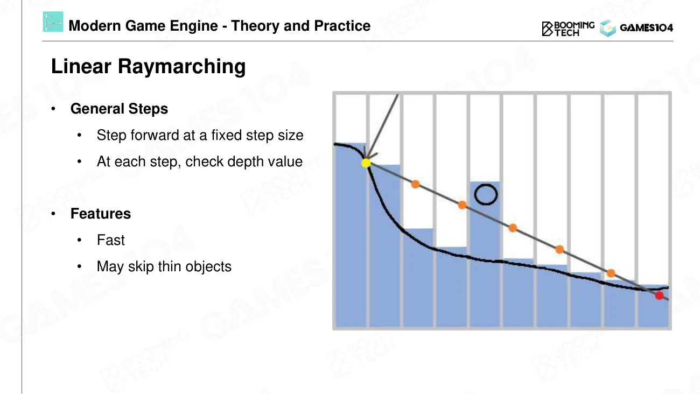
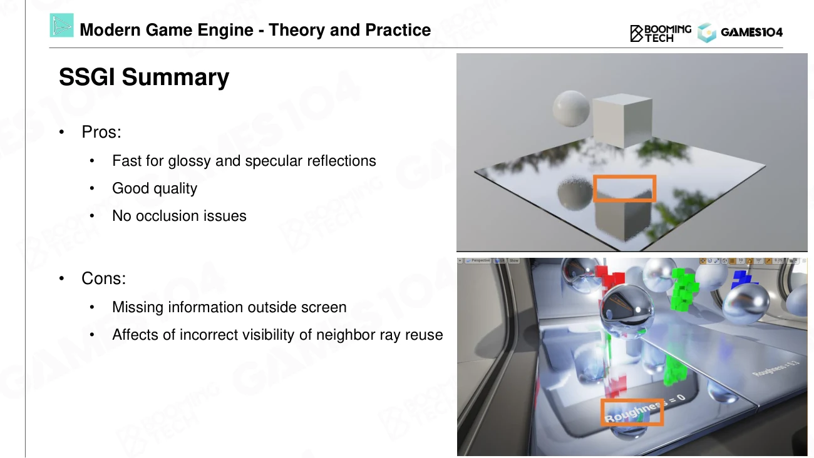
补充说明
SSGI 的“屏幕空间”限制与 SSR（屏幕空间反射）同源：都只能利用当前帧可见信息。
常见坑
光线步进步长过大：错过薄物体，表现为间接光“穿透”物体。
屏幕边缘漏光：光线走出屏幕后无数据，间接光突然消失，表现为边缘暗带。
深度不连续处采样错误：把前景像素当作背景间接光，产生光晕（halo）。
UE / Unity 落地
UE5 中 Lumen 的 Screen Probe 阶段本质是屏幕空间追踪；UE4 的 SSGI 是独立后处理。
Unity HDRP 提供 Screen Space Global Illumination 选项，URP 可通过 Renderer Feature 实现。
066. Lumen 第一阶段：用 SDF 做快速光线追踪
Lumen 是 UE5 的实时全局光照方案，课件把它拆成三个阶段，第一阶段是在任何硬件上都能快速追踪光线。核心工具是有向距离场（Signed Distance Field, SDF）：场景中每个点存储到最近表面的距离，表面内部为负、外部为正。SDF 的好处是光线求交可以用球体步进（Sphere Tracing）：沿光线方向前进“当前点到最近表面的距离”，永远不会穿过表面，能快速跳过空白区域。
Lumen 为每个 Mesh 生成 Mesh SDF，但全场景 SDF 太贵，于是用稀疏网格 SDF（Sparse Mesh SDF）：把 Mesh SDF 切成 brick，只存储有效区域。课件还讲了 Mesh SDF LoD：每帧 GPU 收集请求，CPU 下载并生成不同精度的 SDF。
为了进一步加速，Lumen 构建 Global SDF：把场景 SDF 合并成低分辨率全局距离场，围绕相机用 clipmap 缓存。Global SDF 在表面附近不精确，所以光线追踪时先用 Global SDF 快速跳过远处，靠近表面再切到 Mesh SDF 精确求交。课件给出数据：Global SDF 能大幅降低追踪成本。
这一阶段的工程要点是：用距离场做保守步进，用多级结构（Global + Mesh）平衡精度与速度。这也是 Lumen 能在没有硬件光追的 GPU 上运行的关键。
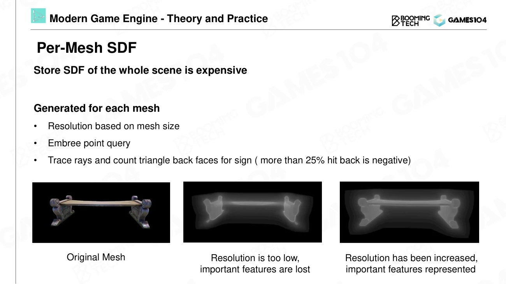
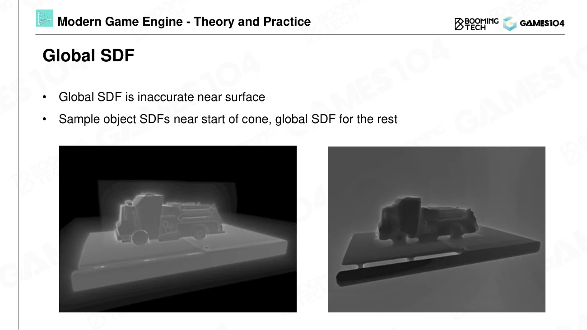
补充说明
SDF 球体步进的步长是“到最近表面的距离”，因此不会穿过表面，但遇到薄物体仍可能漏。
常见坑
薄网格 SDF 漏光：网格厚度小于体素，SDF 无法表达，导致光线穿透；用半体素扩展修复。
SDF 精度不足导致表面附近求交错误：Global SDF 在表面附近不精确，必须切到 Mesh SDF。
动态物体 SDF 更新滞后：每帧只更新部分 Mesh SDF，快速移动物体可能出现追踪错误。
UE / Unity 落地
UE5 中 Lumen 的 Mesh SDF 生成在项目设置中可调（如 Distance Field Resolution Scale），影响精度与内存。
Unity 的 Mesh SDF 可通过插件生成，用于软阴影和 AO。
077. Lumen 第二阶段：辐射度注入与缓存
有了快速光线追踪，下一步是缓存光照，避免每帧重算。Lumen 用 Surface Cache 缓存表面光照：为每个 Mesh 生成若干 Mesh Card（沿轴向正交相机捕获的卡片），把表面 albedo、法线、深度等写入卡片图集。然后分两个 Pass：Card Capture 和 Card Resolve，把卡片数据整合成 Surface Cache。
光照注入时，Lumen 把直接光照写入 Surface Cache，并做分块（tile）剔除：128x128 的页面切成 8x8 的 tile，剔除无光照的 tile，减少计算。间接光则通过 World Probe 缓存：在场景中放置探针，用光线追踪从探针发射光线，命中 Surface Cache 或 Global SDF 获取辐射度，再注入到 Voxel Clipmap 中。
课件强调 World Space Radiance Cache 解决“远处光照”问题：屏幕空间探针只能覆盖近处，远处需要世界空间探针。World Probe 用 clipmap 围绕相机放置，并用 球面视差（sphere parallax） 重投影解决漏光。
这一阶段的核心思想是：把光照“冻结”在表面缓存和探针里，每帧只更新一部分，从而把昂贵的 GI 计算分摊到多帧。
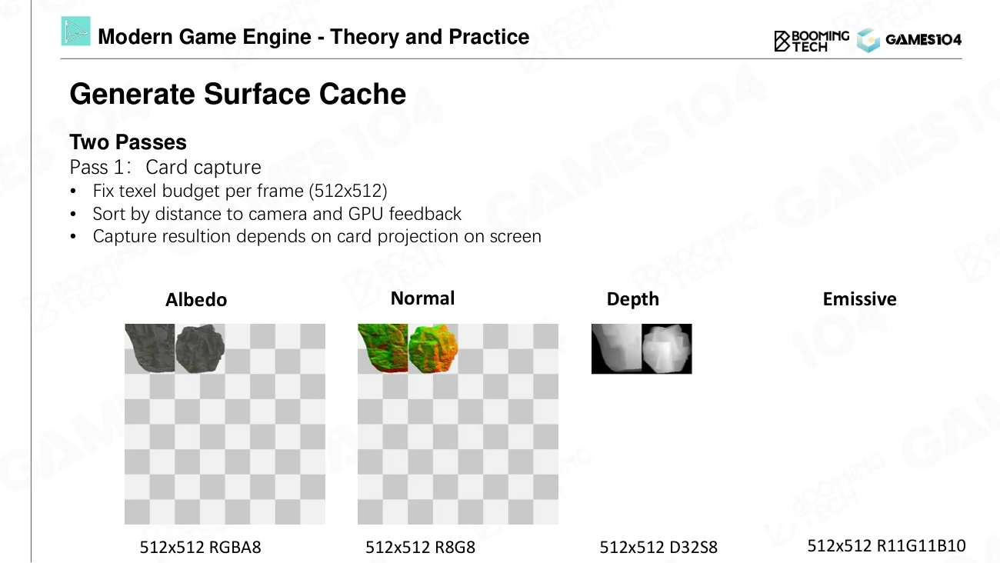
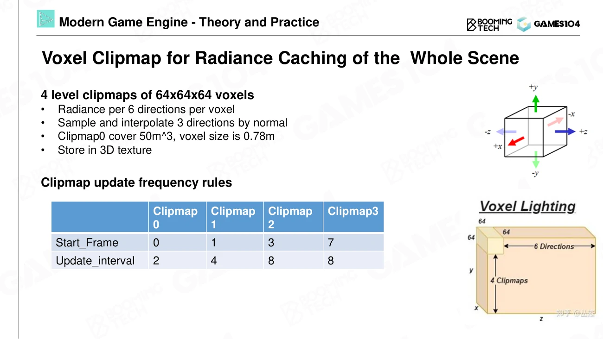
补充说明
Surface Cache 是 Lumen 的核心数据结构，它把 Mesh 表面参数化到卡片上，便于光线追踪时采样。
常见坑
Surface Cache 分辨率不足：卡片分辨率低导致间接光细节丢失，表现为画面发糊。
World Probe 漏光：探针在墙后仍采样到墙前光照；用球面视差重投影和遮挡测试缓解。
缓存更新预算不足：每帧只更新部分 tile，快速变化的光照会出现滞后。
UE / Unity 落地
UE5 中 Lumen 的 Surface Cache 可通过 r.Lumen.SurfaceCache 相关 CVar 调试。
Lumen 的 World Probe 对应 Lumen Scene 的辐射度缓存，可在可视化视图中查看。
088. Lumen 第三阶段：Screen Probe 与全像素着色
最后一步是把缓存的光照插值到每个像素。Lumen 在屏幕空间放置 Screen Probe：以 8x8 像素为一个 tile，每个 tile 放置若干探针（通常 2x2），探针用八面体映射（octahedron mapping）存储全方向辐射度。探针的放置是自适应的，用层级结构在几何边缘处加密。
探针追踪光线时，采样数极少（课件提到 1/8 到 1/2 条光线每像素），所以必须做重要性采样：根据上一帧的辐射度缓存和 BRDF 分布，把光线集中在重要方向。课件展示了均匀方向与重要性采样后的方向分布对比。
追踪完成后，探针辐射度被转换成三阶球谐（Spherical Harmonics, SH），因为 SH 可以用少量系数表示低频方向分布，便于插值。最后，每个像素根据自身法线和视角，用周围探针的 SH 做插值，得到间接光，再与直接光相加：
\[ \text{FinalLighting} = (\text{DirectLighting} + \text{IndirectLighting}) \times \text{Albedo} \]
课件还讲了降噪：对探针做空间滤波，用邻居探针的辐射度加权平均，并做距离/角度钳制避免漏光。最终 Lumen 在 PS5 上 1080p 内部分辨率下，1/8 光线每像素约 0.15ms，1/2 光线约 0.74ms，展示了实时 GI 的性能预算。
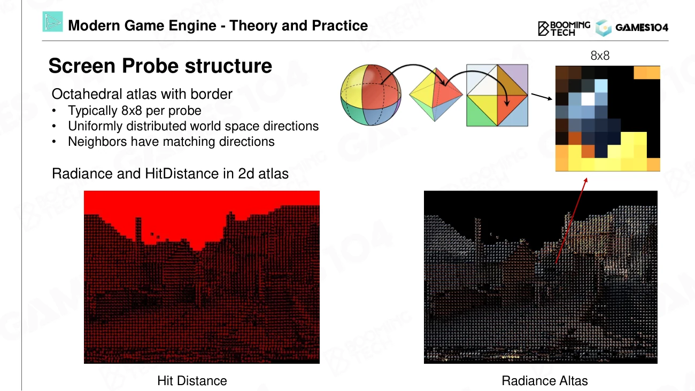
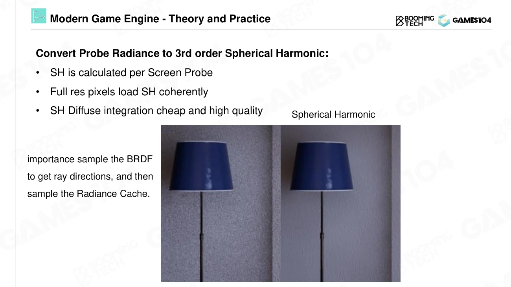
补充说明
三阶 SH 共 9 个系数，足以表示漫反射所需的低频方向分布；高光反射通常另走反射通道。
常见坑
探针插值漏光：相邻探针跨越几何边缘，插值导致光泄漏；用平面距离权重和非插值检测修复。
重要性采样依赖上一帧：快速移动或光照突变时，重要性分布滞后，产生噪点或闪烁。
SH 阶数过低：三阶 SH 只能表达低频，高频间接光（如镜面）丢失，表现为高光模糊。
UE / Unity 落地
UE5 中 Lumen 的 Screen Probe 可通过 r.Lumen.ScreenProbeGather 相关 CVar 调试。
Lumen 的最终着色在 Deferred Lighting 阶段完成，SH 插值在像素着色器中执行。
引擎对照表
| 概念 / 效果 | Unreal Engine | Unity |
|---|---|---|
实时全局光照 | Lumen（默认开启，Project Settings → Rendering → Global Illumination） | Enlighten（实时 GI）或烘焙 Lightmap；HDRP 有 SSGI |
屏幕空间 GI | Lumen 的 Screen Probe 阶段；UE4 的 SSGI 后处理 | HDRP Screen Space Global Illumination；URP 需自定义 Renderer Feature |
距离场 | Mesh Distance Field（项目设置中可调分辨率），用于 Lumen 和 DFAO | 无内置，需插件生成 Mesh SDF |
表面缓存 | Lumen Surface Cache（Mesh Card 图集） | 无直接对应，类似烘焙光照贴图但为动态 |
探针 | Lumen Screen Probe / World Probe | Light Probe Group（烘焙）；HDRP 的 Screen Space Probe 类似 |
球谐光照 | Lumen 用三阶 SH 插值间接光 | Light Probes 使用三阶 SH；Shader 中 ShadeSH9 |
术语双语表
| English | 中文 | 说明 |
|---|---|---|
| Global Illumination (GI) | 全局光照 | 考虑光在场景中多次弹射的渲染方法，包含直接光和间接光。 |
| Rendering Equation | 渲染方程 | 描述表面出射光等于自发光加半球积分的能量平衡方程。 |
| Monte Carlo Integration | 蒙特卡洛积分 | 用随机采样平均值近似积分，样本数越多越精确。 |
| Importance Sampling | 重要性采样 | 让采样 PDF 匹配被积函数形状，降低方差。 |
| Reflective Shadow Map (RSM) | 反射阴影贴图 | 把阴影贴图像素当作虚拟光源做一次弹射 GI。 |
| Light Propagation Volume (LPV) | 光传播体积 | 用 3D 网格注入并传播辐射度的 GI 方法。 |
| Voxel Global Illumination (VXGI) | 体素全局光照 | 体素化场景后用锥体追踪查询间接光。 |
| Screen Space Global Illumination (SSGI) | 屏幕空间全局光照 | 复用屏幕空间数据做光线步进近似间接光。 |
| Signed Distance Field (SDF) | 有向距离场 | 存储到最近表面距离的场，用于快速光线求交。 |
| Spherical Harmonics (SH) | 球谐函数 | 用少量系数表示低频方向分布，用于光照插值。 |
课后练习
01 请用自己的话解释：为什么实时渲染不能直接求解渲染方程？蒙特卡洛积分在其中扮演什么角色？
查看答案
提示：
从递归积分、计算量、采样近似三个角度回答。
渲染方程是递归积分方程，入射光本身又依赖其他表面的出射光，理论上需要无限次弹射才能精确求解；实时渲染每秒几十帧，无法承担精确积分。蒙特卡洛积分用随机采样的平均值近似积分，把不可解的积分转化为可计算的采样平均，样本数决定噪点多少，是实时 GI 的基础工具。
02 比较 RSM、LPV、VXGI、SSGI 四种 GI 方案：各自的核心数据结构是什么？主要优点和缺点是什么？
查看答案
提示：
从“光注入到什么中间表示”和“查询方式”两个维度对比。
RSM：中间表示是阴影贴图像素（虚拟光源），优点是实现简单，缺点是虚拟光源多、只支持一次弹射。LPV：中间表示是 3D 网格，优点是速度快、支持动态，缺点是分辨率低导致漏光、方向性差。VXGI：中间表示是体素 clipmap，优点是支持屏幕外和多次弹射，缺点是体素化遮挡不准、内存大。SSGI：中间表示是屏幕空间颜色/深度，优点是快、近接触阴影好，缺点是屏幕外信息缺失导致漏光。
03 Lumen 为什么需要 Global SDF 和 Mesh SDF 两级距离场？只用其中一种会有什么问题？
查看答案
提示：
从精度和性能两个角度分析。
Global SDF 是低分辨率全场景距离场，能快速跳过空白区域，但在表面附近不精确；Mesh SDF 是每个 Mesh 的高精度距离场，求交准确但数量多、遍历慢。只用 Global SDF 会导致表面附近求交错误；只用 Mesh SDF 则追踪成本过高。两级结构先用 Global SDF 快速步进，靠近表面再切 Mesh SDF 精确求交，平衡精度与性能。
04 在 UE5 中开启 Lumen 后，场景出现“墙后漏光”和“暗部噪点闪烁”，请分别分析可能原因并给出至少两条排查/修正建议。
查看答案
提示：
漏光与 SDF/探针插值有关；噪点与采样数、降噪、时域累积有关。
漏光：可能是薄墙 SDF 表达不足（增大 Distance Field Resolution 或加厚墙体）、World Probe 球面视差重投影不准确（检查 r.Lumen.ScreenProbeGather 相关 CVar）、探针跨几何边缘插值（启用非插值检测）。噪点闪烁：可能是采样数过低（提高 Lumen 质量设置）、时域累积未生效（检查 TAA/TSR 设置）、重要性采样依赖上一帧导致滞后（降低场景光照突变频率或提高更新预算）。
05 假设一个像素的间接光积分中，被积函数在半球上近似为常数 2，若用均匀 PDF（\(p = 1/(2\pi)\)）采样 100 次，估计值的方差与用余弦 PDF 采样相比如何？请定性说明。
查看答案
提示：
比较两种 PDF 与被积函数的匹配程度。
均匀 PDF 与被积函数不匹配，样本值 \(f/p = 2 \cdot 2\pi = 4\pi\) 为常数，方差为 0（因为被积函数是常数，任何 PDF 下 \(f/p\) 都恒定）。但实际被积函数含余弦项，余弦 PDF 能吸收余弦因子，使 \(f/p\) 更平滑，方差更小。定性结论：PDF 越接近被积函数形状，方差越小，相同样本数下噪点越少。